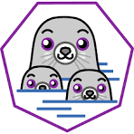
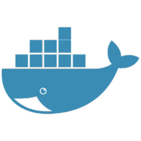
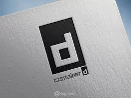
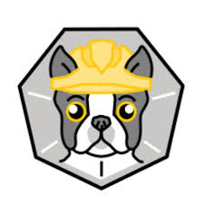
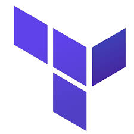

MY TECH STACK
Tools I have learned, practiced, and deployed in real environments.
FOUNDATION
The Linux environments I work in — from certified enterprise OS to cloud-native deployments.
Red Hat Enterprise Linux — the OS I am officially certified on. My RHCSA validates expertise in system administration, SELinux, storage, and systemd service management.
My go-to OS for Docker, scripting, and AWS deployments. Ubuntu powers most of my hands-on DevOps work — from building containers to managing EC2 instances.
Enterprise Linux built for stability and Kubernetes-native workloads. SUSE is designed for production environments where reliability and security are non-negotiable.
TOOLS & PLATFORMS
Technologies I have built, deployed, and automated with in real environments.
A daemonless container engine that runs containers without root privileges. Podman is the Red Hat alternative to Docker — essential for RHCSA and enterprise Linux environments.

The foundation of containerization. I use Docker to build, ship, and run applications in isolated containers — making deployments consistent across every environment.

An industry-standard container runtime that manages the complete container lifecycle — from image pull to execution. The core engine powering Docker and Kubernetes under the hood.

A command-line tool for working with remote container image registries. Inspect, copy, and sync images between registries without pulling them locally — powerful for CI/CD pipelines.
A tool for building OCI-compliant container images without a running daemon. Works seamlessly with Podman — giving full control over image creation layer by layer.

The king of container orchestration. I use Kubernetes to deploy, scale, and manage containerized applications across clusters — automating rollouts, self-healing, and load balancing.
Infrastructure as Code at its best. I use Terraform to provision and manage cloud infrastructure using simple declarative configuration files — making infrastructure reproducible and version-controlled.

Amazon Web Services — the backbone of modern cloud infrastructure. I work with EC2, S3, VPC, IAM, and Lambda to build, deploy, and manage scalable cloud-based applications.